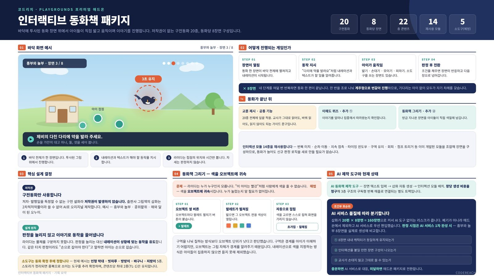

03 멈춘 프로젝트 · 동화책
동화책 콘텐츠는 두 번 멈췄고, 이유가 달랐습니다
1차 중단
도구 하나 바꾸는 데 평균 10초
동화책 속 물건을 도구로 바꿔 쓰는 방식이었습니다. 기믹은 재밌었지만, 어떤 도구인지 알기 어렵고 바꾸는 동안 흐름이 끊겼습니다.
방향 전환
도구 교체를 없애려 AI 생성으로
여러 AI 모델을 연결해 동화책을 만드는 구조를 직접 설계했고, 실제 생성까지 구현했습니다. 출시는 하지 않았습니다.
2차 보류
만들 수는 있었지만 비용이 안 맞음
상용 AI는 만들 때마다 비용이 들고, 자체 모델은 AI 개발자를 따로 뽑아야 했습니다. 연출을 넣을수록 비용과 품질 관리가 어려웠습니다.

AI 동화책 기획서 예시안
20